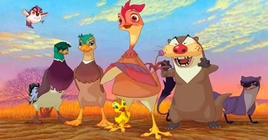

Greene: Lifi, uma galinha na selva

Deixado por seus pais terrivelmente assassinados por uma lontra, Greene é um pato selvagem criado por Lifi, uma galinha que após conseguir fugir do galinheiro em que vivia para a selva o encontra ainda no ovo depois do ocorrido. Acontece que Lifi conhecia o seu pai, um pato de vigília que a mesma o denominou de Andarilho.
Andarilho presenciou a morte de sua….esposa pata?dias antes da sua. Atormentado pela lembrança, pede para Lifi viver com o filhote que ainda estava por vir no pantano, pois era um lugar mais seguro e ela entenderia com o tempo, e após sua morte ela vai.
Greene cresce em um ambiente que o exclui e isola por sua criação, isso acabou o afetando durante grande parte de sua infância, fazendo ele se rebelar contra Lifi num momento. No entanto, com o passar dos anos, ele encontra seu verdadeiro propósito e a razão pela qual foi criado naquele lugar.
Filme:
- Lifi, uma galinha na selva.
Disponível em: YouTube.